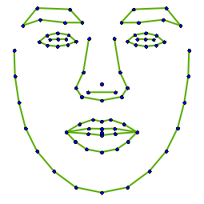

Manchester Shape Modelling Tutorial
Introduction
This tutorial demonstrates how to use several of the key tools in the msm library to build a shape model, display its modes and explore the distributions of shape parameters.
It assumes that you are familiar with running tools on a command line, and that your system is set up so that it knows where the msm_* tools are (for instance, by setting your $PATH variable to include the directory with the binaries).
The tutorial is in the directory msm_tutorial, and includes a sub-directory (points_80) which contains 50 face shape examples, each annotated with 80 points.

You can run the commands below directly in the tutorial directory, but you might want to take a copy of it to avoid changing the original when you edit files.
See also the overview of msm tools.
Building a shape model
To build a shape model from the available examples, use the following command (from within the msm_tutorial directory:
msm_build_shape_model -p build_shape_model.params
This will load in the 50 sets of points listed in the parameter file. Since a reflection_symmetry is defined it will generate an additional set of 50 examples by reflecting each original example (and renumbering the points as defined).
Thus the model is built from 100 examples in total, and saved to the file face_80pts.msm (defined in the parameter file).
If you have the uomqvxl tools available, then you can display the modes of the model using the command:
qmsm_shape_mode_viewer -s face_80pts.msm -c face_80pts.crvs
The face_80pts.crvs is a text file defining how curves should be drawn through the points.
Activity
- Copy face_80pts.crvs to face_80pts-b.crvs
- Edit face_80pts-b.crvs to add an additional line between points 0 and 14
- Display the result using qmsm_shape_mode_viewer
Drawing the shape modes
We can generate EPS files showing the modes, which are better for including into papers (they use vector graphics so can be displayed at arbitrary resolutions).
Run:
msm_draw_shape_modes -p draw_shape_modes.params
This will generate three .eps files, which can be viewed with PDF viewers such as okular.
To convert to PDF files, under Ubuntu, use:
ps2pdf face_80pts_s1.eps tmp.pdf
pdfcrop -clip tmp.pdf face_80pts_s1.pdf
The first command converts the eps to a PDF file, but fills a whole page.
The second command creates a PDF cropped just to the area of interest, suitable for including in a document.
Activity
Try editing the parameter file draw_shape_modes.params to change the appearance of the resulting plots:
- Change the point size and colour
- Change the line-width
- Switch overlap_shapes to true
Getting shape parameters
To get the shape parameters for each example, use the following:
msm_get_shape_params -p build_shape_model.params -o face_params.txt -u
This will read in all the shapes listed in build_shape_model.params, fit the shape model, then save the parameters to the named file, one line per shape.
By default the first few numbers on each line are the parameters of the pose transformation. So in this case (a similarity transformation), the first four are the pose, then columns 5 onwards are the shape parameters (the elements of the b-vector)
To suppress the inclusion of the pose parameters you can add the -no_pose flag - in that case the first numbers will be the shape parameters.
You can use your favourite plotting tool to display the scatter of the parameters.
For instance, running gnuplot:
plot "face_params.txt" using 5:6
will create a scatter of the first shape parameter against the second.
Looking at histograms of the parameters
The tool can also create histograms for each parameter.
Add flags to the call as follows:
msm_get_shape_params -p build_shape_model.params -o face_params.txt -u -h face_histo
The -h face_histo flag tells the tool to generate text files containing information describing histograms for each shape parameter, such as face_histo_b0.txt for the first parameter.
This can be displayed using gnuplot with the command:
plot "face_histo_b0.txt" with boxes
Drawing shapes given parameters
The msm_draw_shapes tool can read in one or more sets of parameters from a text file and draw the resulting shape(s).
For instance, run:
msm_draw_shapes -p draw_shapes.params -o face_80pts-egs.eps
This reads in a set of parameters for three shapes from the text file params_to_draw.txt (named in the draw_shapes.params file).
params_to_draw.txt looks like this:
-0.012 0.018 -0.019 0
0.057 -0.028 -0.008 0.001
-0.014 0.075 0.015 0
The tool saves the resulting EPS to the named file (face_80pts-egs.eps).
Activity
- Edit params_to_draw.txt and examine the effect.
- Edit draw_shapes.params to change the colours etc
Exploring the number of modes to use
One commonly decides how many modes to use either by specifying an upper limit (e.g. max_modes: 7) or by defining the proportion of the total variance to explain (e.g. var_prop: 95).
The tool: msm_estimate_residuals can evaluate how well the shape model can approximate a given set of shapes using different numbers of modes, which can help when trying to decide a suitable number.
For example, try running:
msm_estimate_residuals -p build_shape_model.params -o residual_stats.txt
This will use leave-some-out experiments to evaluate the shape model's accuracy on unseen data as a function of the number of modes.
Plot the second column (the mean approximation error) against the first (the number of modes).
For instance, in gnuplot use:
plot "residual_stats.txt" using 1:2:3 w errorbars
This shows the reduction in error (in image co-ordinates) as the number increases - enabling a choice of the number of modes to achieve a desired level of accuracy.
Other columns in the output file give the approximation accuracy measured in the model reference frame.
Next steps
Study the overview of msm tools.